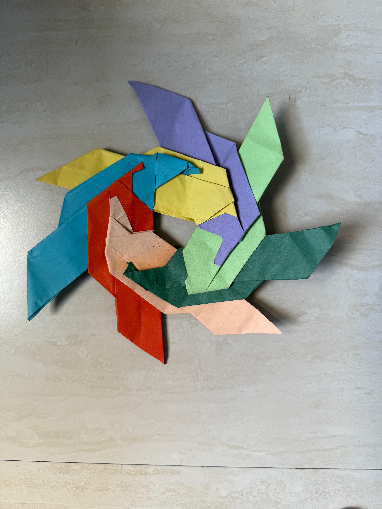
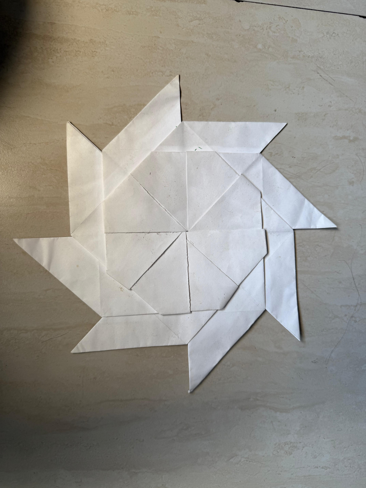
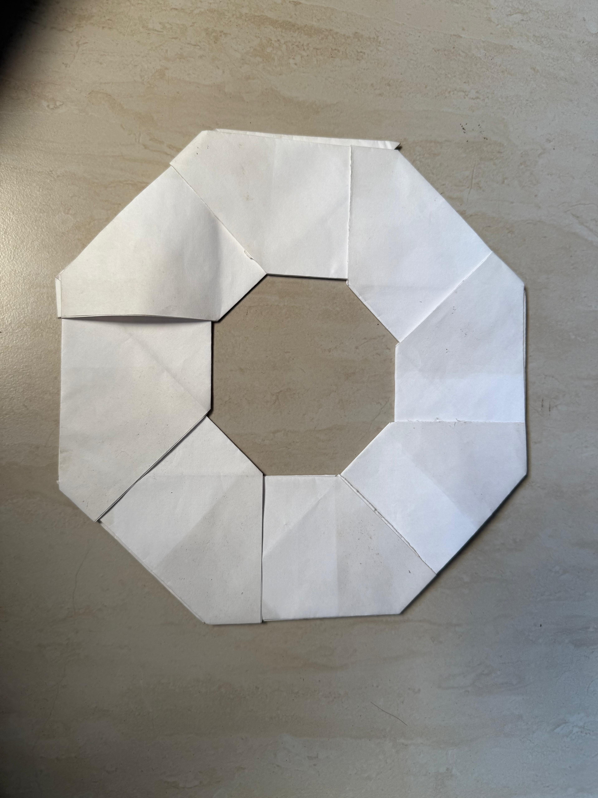
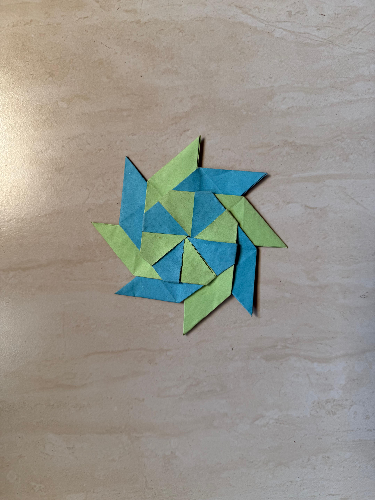
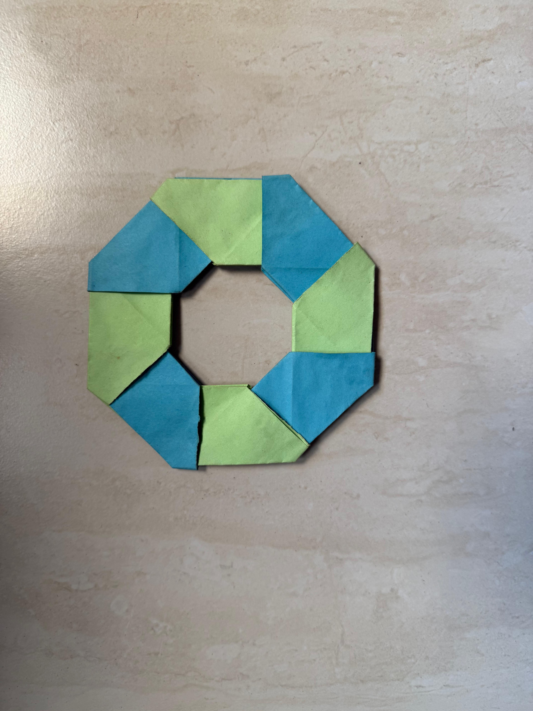
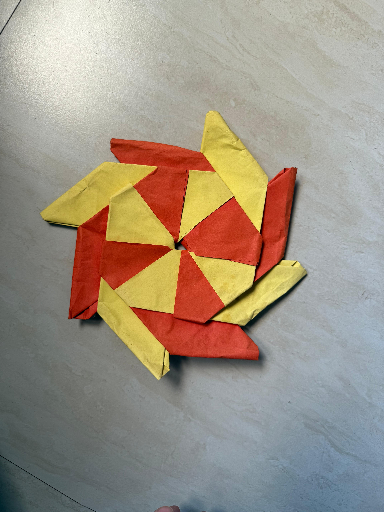
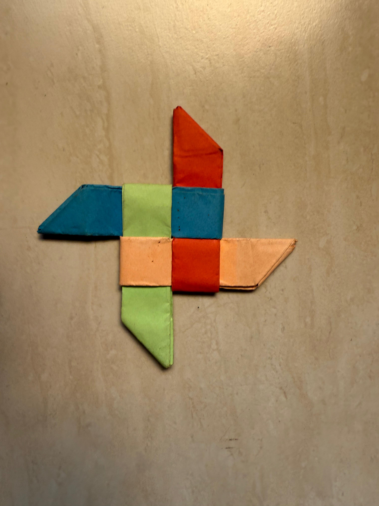
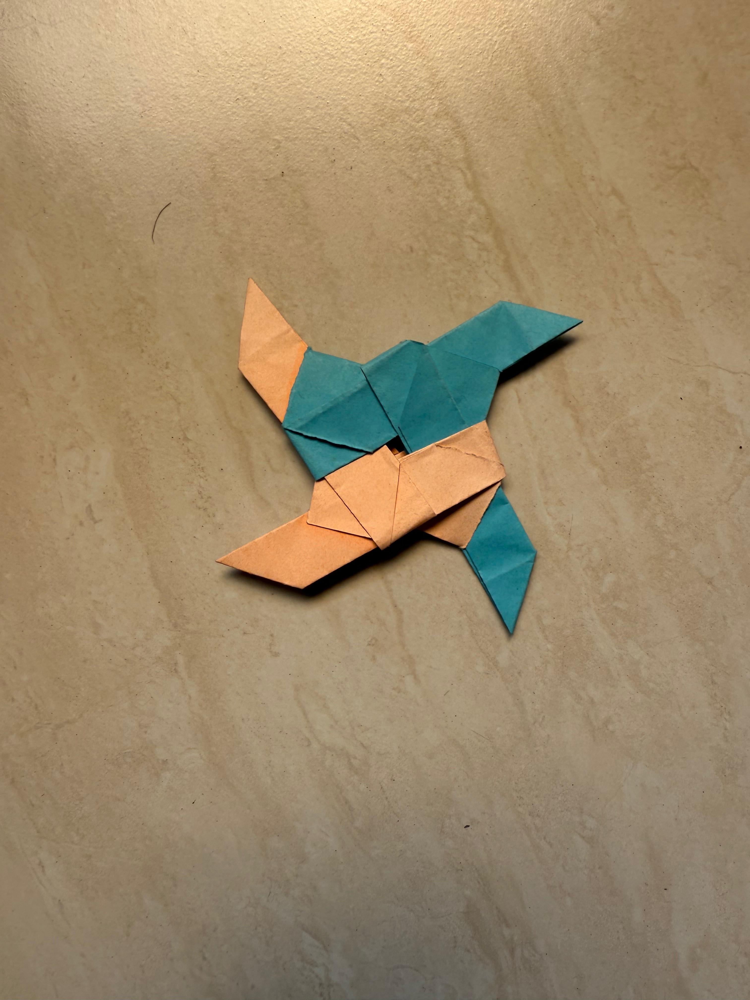
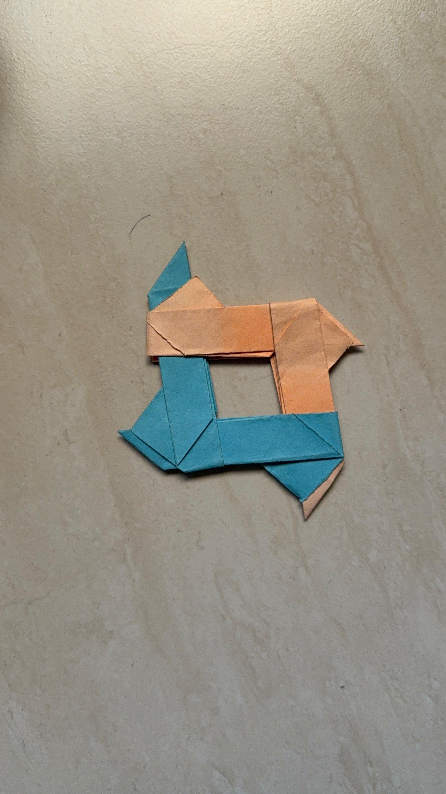

Origami
Ninja Stars

About These Pieces
These are some ninja stars and star-based origami models I folded while trying out different shapes, point counts, colors, and transformable designs.
Simple Star Forms
These are the cleaner star shapes, where the main focus is the outline and symmetry.

Eight-Point Stars
I also tried a few eight-point versions. These feel more circular and complete, almost like rings or wheels.





Ninja Star Variations
These versions are more playful and layered. I liked experimenting with how the colors changed the shape and movement of the stars.



Videos
These videos show how some of the models move and transform.